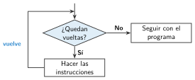

Bucles: repetir, por siempre y repetir hasta
🤔 Pienso5 min
Qué hago aquí: Piensa un momento y contesta con lo que ya sabes. No pasa nada si no lo sabes: es para empezar.
Un baile dice: paso a la derecha, palmada, paso a la izquierda, palmada, y otra vez lo mismo, y otra vez. Escríbelo más corto con la palabra «repetir».
📖 Leo y aprendo15 min
Qué hago aquí: Lee despacio, mira los dibujos y los ejemplos, y quédate con la idea clave del final.
Un bucle es un bloque que repite lo que tiene dentro . Así no hay que copiar bloques.

✏️ Hago25 min
Qué hago aquí: Haz las actividades en orden. Empieza siempre por las básicas.
Une cada caso con su bucle.
| Dibujar los 8 lados de un octógono • | • Por siempre |
| Vigilar un sensor todo el rato • | • Mientras |
| Pedir la contraseña hasta acertar • | • Repetir n veces |
¿Cuántas veces se escribe «Hola»? Repetir 5 veces: escribir «Hola».
Programa la cuenta atrás en App Lab. Pruébala.
Cambia la cuenta atrás para que empiece en 20.
Con un bucle, escribe en la consola la tabla del 7. Explica cómo lo has hecho.
✏️ Puedes responder escribiendo, con un dibujo o un esquema, o contándolo en voz alta.
🚀 Amplío (si quieres saber más)
Qué hago aquí: ¿Has terminado? Lee la curiosidad o elige el reto. Es voluntario.
Haz un cronómetro con timedLoop: una etiqueta que suma 1 cada segundo y un botón para pararlo (stopTimedLoop).
✅ Compruebo5 min
Qué hago aquí: Contesta sin mirar la ficha y marca cómo lo llevas.